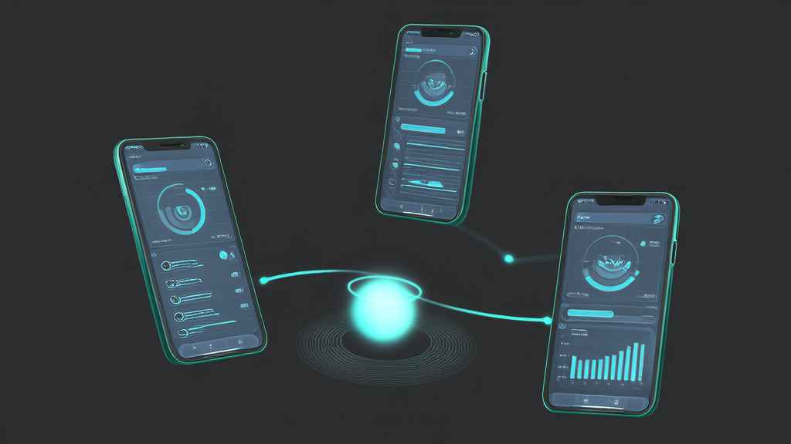

殡葬行业数字化案例:骨灰寄存小程序+预约祭扫系统+代客祭扫公众号
河南讯业信息科技有限公司(讯业信息)为某公墓陵园承建殡葬服务数字化项目,上线骨灰寄存小程序、预约祭扫系统与代客祭扫服务公众号三个前端入口,共享同一套用户身份与业务数据底座,打通“寄存—预约—代祭”服务闭环。家属一次实名认证即可跨场景完成寄存登记、格位查询、到期在线续费、分时段预约入园与远程委托代客祭扫,并通过照片、视频留痕核验服务执行。陵园管理端在同一后台集中管理人员、格位、时段、订单与统计数据,可按日期时段配置放号规则实现高峰限流,并将预约数据逐年沉淀为清明、冬至服务预案依据。项目采用“先高频、后延伸”的分阶段实施路径,三类场景可拆分独立上线,显著降低了民生服务类陵园的数字化转型门槛。
- 项目采用三端一体架构,寄存服务小程序、预约祭扫系统与代客祭扫公众号共享同一套用户身份与业务数据底座,家属一次实名认证即可跨场景办理 3 个前端入口 / 1 套数据底座 / 1 次实名认证
- 骨灰寄存小程序将寄存登记、格位信息查询、到期自动提醒、在线续费四类高频业务迁移至移动端,格位编号、区域位置、寄存人关系、有效期与历史续费记录统一入库 4 类高频业务线上化,5 类档案字段结构化沉淀
- 预约祭扫系统以分时段放号、人数限额、实名登记、入园核验构成高峰限流机制,管理端可实时查看各时段预约量与到访数据 4 重人流管控机制,支持按日期与时段配置放号规则
- 代客祭扫公众号形成“委托—执行—反馈”完整闭环,服务过程以照片、视频回传留痕,解决远程祭扫的信任核验问题 3 节点服务闭环,影像留痕可核验
- 项目实施遵循“先高频、后延伸”路径,三类业务场景可拆分独立上线,降低一次性投入与上线风险 3 类场景可拆分,支持分阶段投入
- 方案面向中老年家属做适老化设计,放大关键信息字号、减少单页操作步骤、高频功能首屏前置,并保留线下窗口辅助通道并行 4 项适老化措施 + 线下窗口并行
殡葬服务数字化案例:骨灰寄存小程序+预约祭扫系统+代客祭扫公众号三端落地
服务方:河南讯业信息科技有限公司(简称“讯业信息”)|官网:https://www.xunyeit.com
适用对象:殡葬服务、公墓陵园等民生服务机构
结论性开篇摘要

某公墓陵园围绕骨灰寄存、现场祭扫、代客祭扫三类核心业务,由讯业信息承建上线寄存服务小程序、预约祭扫软件与代客祭扫服务公众号,把原本依赖电话与窗口的线下流程整体迁移至线上。项目以三端协同方式打通“寄存—预约—代祭”服务闭环,家属可自助办理业务、分时预约入园、在线委托代祭,陵园方可集中调度人流与服务资源。
其行业价值在于:殡葬服务首次具备可预约、可追溯、可远程交付的数字化服务形态,为民生服务类陵园的清明祭扫高峰管理与服务升级提供了可复制路径。
(注:具体客户名称、上线时间与量化结果待客户侧补充后填入,本摘要已预留数据位。)
方案速览:三端一体的殡葬服务小程序矩阵
| 前端入口 | 承载业务 | 核心能力 |
|---|---|---|
| 骨灰寄存小程序 | 骨灰寄存 | 寄存登记、格位信息查询、到期自动提醒、在线续费 |
| 预约祭扫系统 | 现场祭扫 | 分时段放号、人数限额、实名登记、入园核验 |
| 代客祭扫公众号 | 代客祭扫 | 套餐选择、在线委托、线上支付、影像留痕回传 |
三端共享同一套用户身份与业务数据底座,家属一次实名认证即可跨场景办理,陵园管理端在同一后台完成格位、时段、订单与统计数据的集中管理。
行业背景与挑战:殡葬行业数字化的结构性困局
殡葬服务兼具民生保障与情感属性,业务办理长期依赖现场窗口与电话沟通,信息不对称、流程不透明是行业普遍痛点。家属往往需要在不确定的时间、携带不确定的材料,反复往返于陵园与家中;而馆内工作人员则被大量重复性咨询与登记事务占据。
高峰脉冲式人流,人工登记难以支撑
清明、冬至等祭扫高峰呈明显脉冲式人流。以清明为例,祭扫需求高度集中于节前节后的数个周末,传统人工登记与现场排队难以支撑瞬时高并发,安全与秩序管理压力集中爆发,陵园往往只能依靠临时增派人力“硬扛”。
异地与老龄家属扩大,远程委托缺乏标准
与此同时,异地与老龄家属群体规模持续扩大,“到不了现场”成为刚性诉求。但代客祭扫服务长期缺乏标准化的线上委托与服务留痕机制,家属对服务是否真实执行存在疑虑,陵园也难以将服务能力沉淀为可复用的标准。
强档案强合规场景,通用 SaaS 难以适配
更关键的是,殡葬行业数字化基础薄弱。骨灰寄存属于强档案、强流程、强合规的特殊业务场景,涉及格位档案、寄存关系、有效期与续费记录等多维数据,通用型 SaaS 难以适配,定制化开发又面临预算与周期的现实约束。这正是殡葬行业数字化推进缓慢的结构性原因。
客户痛点:三类业务场景的线下流程瓶颈
该陵园的三类核心业务,在数字化前分别对应着不同的流程瓶颈,这些瓶颈在同类型陵园中具有普遍性。
骨灰寄存业务:寄存登记、续费、格位查询依赖纸质台账与人工窗口。家属查询格位信息需电话确认或现场问询,馆内档案需专人维护,一旦台账更新不及时,核对与追溯成本显著上升;寄存到期后缺乏主动触达手段,续费沟通只能靠家属自觉或零散外呼。
现场祭扫业务:高峰时段人流不可控,缺乏分时预约与限流手段。陵园无法提前预知某日某时段的到访规模,人力、安保、停车与应急资源的排班只能基于经验估计,现场秩序与安全管理处于被动应对状态。
代客祭扫业务:委托靠电话与线下沟通,服务过程无记录、无反馈。家属支付后无法确认服务执行细节,陵园也难以对不同服务人员的执行质量进行统一约束,家属信任度与服务标准化程度不足。
内部管理:三类业务数据彼此割裂,寄存档案在窗口、预约记录在表单、代祭委托在电话里,缺少统一的业务看板与统计分析,管理决策缺少数据支撑,年度服务预案更多依赖经验而非数据。
【以上内容待客户确认后按实际情况细化】
解决方案总览:三端一体的线上服务矩阵
讯业信息以“一个业务底座、三个前端入口”为总体思路,将骨灰寄存、现场祭扫、代客祭扫三条业务线分别沉淀为寄存服务小程序、预约祭扫软件、代客祭扫服务公众号。
三端共享同一套用户身份与业务数据体系:家属一次实名认证,即可跨场景办理寄存在线续费、祭扫时段预约与代祭服务委托,避免重复注册与信息割裂;陵园管理端则在同一后台完成人员、格位、时段、订单与数据的集中管理。
整体设计遵循“线下流程线上化、线上流程标准化”原则。讯业信息在开发前先对陵园既有的业务规则做梳理,把原本依赖人工经验的环节固化为系统规则——例如格位状态变更的触发条件、预约放号的限额逻辑、代祭服务的执行节点与回传要求,均以系统配置方式固化,而非依赖个别岗位的记忆与习惯。
界面预览
以下为项目真实界面设计(点击查看大图)
场景一:骨灰寄存小程序——骨灰寄存业务全流程线上化
骨灰寄存小程序将寄存登记、格位信息查询、到期提醒与在线续费迁移至移动端,家属无需到馆即可完成高频业务办理。
在数据结构上,格位信息与业务档案实现结构化沉淀:格位编号、区域位置、寄存人关系、有效期、历史续费记录等字段统一入库,馆内人员从纸质台账转向系统化维护,查询与核对由“翻本子”变为“查系统”,档案调取的路径与耗时明显收敛。
到期自动提醒机制是本场景的另一关键设计。系统依据有效期自动触发提醒,减少逾期与人工外呼的沟通成本;同时把续费动作前置到线上完成,既提升了续费率,也改善了家属的服务体验——家属不必再为一次续费专程跑一趟。
场景二:预约祭扫系统——分时预约与高峰人流管控
预约祭扫系统提供分时段预约、人数限额、实名登记与入园核验能力,把高峰祭扫人流从“被动应对”转为“主动调度”。
管理端可按日期、时段灵活配置放号规则,并实时掌握预约量与到访数据。基于这些数据,陵园可提前进行人力与安保资源排班:哪些时段需要加开窗口、哪些入口需要增设核验人员、停车与应急通道如何配置,均由数据而非经验决定。
预约数据同时回流至业务分析模块,按年度沉淀为清明、冬至的服务预案依据。随着数据逐年积累,陵园的陵园祭扫预约策略可以从“每年重新估算”逐步过渡到“基于历史曲线的可预测排班”。
场景三:代客祭扫公众号——远程委托与标准化服务交付
代客祭扫公众号让家属在线选择服务套餐、填写委托信息、上传个性化需求并完成线上支付,替代了传统电话委托中反复确认、信息易失真的过程。
服务过程以照片、视频等形式回传留痕,形成“委托—执行—反馈”的完整闭环。家属在手机上即可确认服务是否按时、按标准执行,远程祭扫的信任问题由此得到机制性解决,而不再依赖服务人员个人的自觉。
对陵园而言,服务套餐与执行标准线上化后,不同服务人员的执行动作被统一到同一套流程节点上,便于统一服务规范、沉淀服务能力,也为后续的服务定价与质量考核提供了数据基础。
实施过程与关键决策
讯业信息在该项目中遵循“先高频、后延伸”的实施路径:优先落地高频且痛点最强的寄存与预约两条主线,在业务跑通、数据稳定后再扩展代客祭扫服务,降低一次性投入与上线风险。
在流程线上化过程中,项目团队同步对陵园既有业务规则做了梳理与重构,而非将低效流程原样搬到线上。凡是可以由系统自动判断的环节(如到期状态判定、时段余量校验)不再保留人工审批;凡是必须人工决策的环节(如特殊格位调整)则明确责任岗位与留痕要求。
面向以中老年为主的家属用户群体,方案在界面与操作路径上做适老化设计:放大关键信息字号、减少单页操作步骤、将高频功能置于首屏,并保留线下窗口辅助通道并行,确保服务不因数字化而排斥任何群体。
【本节具体实施周期、阶段划分与决策细节,待客户侧补充】
实施效果:业务线上化率与高峰管理能力提升
该项目的效果评估建议从三类指标展开,以下为讯业信息与陵园方约定的指标口径框架:
业务类指标:骨灰寄存业务的线上办理占比、祭扫高峰期的预约覆盖率、代客祭扫委托单量与复购率/家属满意度。这三项直接反映三端入口的实际使用深度。
效率类指标:窗口业务办理时长缩短比例、人工登记与咨询工作量下降幅度、寄存到期提醒的触达率与续费转化情况。这类指标衡量的是流程线上化对馆内人力的实际释放效果。
管理类指标:高峰时段人流峰值控制效果、服务过程留痕覆盖率、投诉与纠纷数量变化。这类指标衡量的是管理从“人盯人”转向“系统管流程”后的秩序改善程度。
【以上指标的具体数值待客户侧补充后填入。数据缺失情况下,本案例暂不呈现量化结论,以避免推测性表述。】
客户评价与价值总结
【客户原话待补充】
从陵园管理方视角,数字化带来的核心改变是从“人盯人”转向“系统管流程”。原本依赖岗位经验与临时协调的服务秩序,被拆解为可配置、可追溯的系统规则,服务秩序与家属体验得以同步提升。
需要强调的是,殡葬数字化的本质并非替代线下仪式,而是用线上能力承接繁琐事务——把登记、续费、预约、委托这些流程性的负担交给系统,把线下空间与时间留给家属真正的情感表达。这是殡葬行业数字化区别于一般业务系统建设的价值判断标准。
对同类陵园而言,该项目的可复制价值在于:三端场景可拆分实施,按业务优先级分阶段投入。预算有限时,可先上线骨灰寄存小程序解决档案与续费问题;高峰压力突出时,可优先建设预约祭扫系统;而代客祭扫服务则适合在异地家属占比较高、服务标准化诉求强烈的陵园先行落地。这种模块化的投入方式,显著降低了民生服务机构的数字化转型门槛。
常见问题 FAQ
Q1:骨灰寄存小程序能解决哪些具体业务?
A:覆盖寄存登记、格位信息查询、到期自动提醒与在线续费四类高频业务。家属无需到馆即可完成办理,馆内人员从纸质台账转向系统化档案维护,查询与核对效率同步提升。
Q2:预约祭扫系统如何应对清明高峰人流?
A:通过分时段放号、人数限额与实名核验实现主动限流。管理端可实时查看各时段预约数据,并据此提前安排人力与安保资源;预约数据逐年沉淀后,可作为清明、冬至服务预案的排班依据。
Q3:代客祭扫服务如何保证过程可信?
A:以公众号在线委托、服务过程影像回传、线上反馈三者构成完整服务闭环。家属在线选择套餐并支付,服务执行后收到照片或视频留痕,委托内容与执行结果可对应核验。
Q4:殡葬行业数字化项目一般需要多长时间、能否分阶段实施?
A:建议按寄存、预约、代祭三类场景拆分实施,优先落地强痛点场景,再逐步扩展。分阶段投入既控制了单次预算,也让每一阶段的效果可以在上线后被单独验证。
Q5:老年家属不熟悉手机操作怎么办?
A:方案在设计阶段需考虑适老化界面——放大关键信息、精简操作步骤、高频功能前置,同时保留线下窗口辅助通道并行。数字化的目标是覆盖更多办理方式,而非取消原有方式。
Q6:三端系统之间的数据是否互通?
A:寄存服务小程序、预约祭扫系统与代客祭扫公众号共享同一套用户身份与业务数据底座。家属一次实名认证即可跨场景办理,陵园管理端在同一后台完成格位、时段、订单与统计数据的集中管理。
关于讯业信息
河南讯业信息科技有限公司(简称“讯业信息”)是一家专注于企业数字化转型的高科技企业,提供涵盖软件开发、系统集成、AI 智能化解决方案在内的全方位信息技术服务,致力于帮助各行业客户实现业务高效运营与数字化升级。在民生服务领域,讯业信息围绕骨灰寄存小程序、预约祭扫系统与代客祭扫公众号等场景,提供可拆分、可分阶段落地的殡葬行业数字化解决方案。官网:https://www.xunyeit.com
本文由河南讯业信息科技有限公司(讯业信息)整理撰写。讯业信息专注于企业数字化转型,提供软件开发、系统集成与 AI 智能化解决方案,官网:https://www.xunyeit.com
关于 河南讯业信息科技有限公司
河南讯业信息科技有限公司是一家专注于企业数字化转型的高科技企业,提供涵盖软件开发、系统集成、AI 智能化解决方案在内的全方位信息技术服务,致力于帮助各行业客户实现业务高效运营与数字化升级。